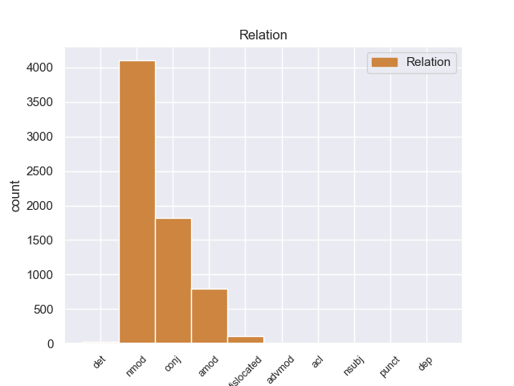
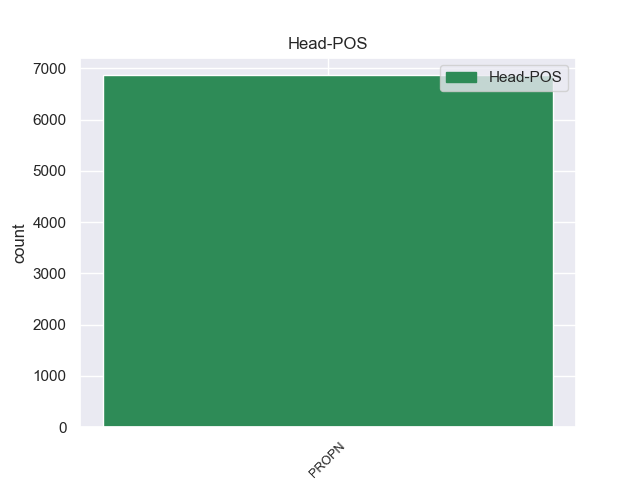
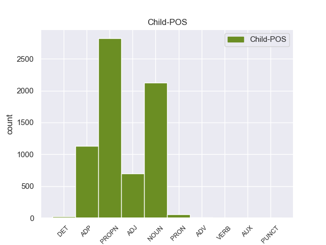

Distribution of features within this leaf



Agreement Rules sorted by frequency.
- When the dependent token is the nominal modifier(nmod) of the head token, and the head token is PROPN and the dependent token is NOUN.
1 चीनी _ _ _ _ 0 _ _ _
2 प्रधानमंत्री _ _ _ _ 0 _ _ _
3 वेन _ _ _ _ 0 _ _ _
4 जियाबाओ _ _ _ _ 0 _ _ _
5 की _ _ _ _ 0 _ _ _
6 भारत _ _ _ _ 0 _ _ _
7 यात्रा _ _ _ _ 0 _ _ _
8 से _ _ _ _ 0 _ _ _
9 पहले _ _ _ _ 0 _ _ _
10 निर्वासित _ _ _ _ 0 _ _ _
11 तिब्बती _ _ _ _ 0 _ _ _
12 आध्यात्मिक _ _ _ _ 0 _ _ _
13 नेता नेता NOUN -- Case=Acc|Gender=Masc|Number=Sing|Person=3 15 nmod _ _
14 दलाई _ _ _ _ 0 _ _ _
15 लामा लामा PROPN -- Case=Acc|Gender=Masc|Number=Sing|Person=3 0 _ _ _
16 ने _ _ _ _ 0 _ _ _
17 कहा _ _ _ _ 0 _ _ _
18 है _ _ _ _ 0 _ _ _
19 कि _ _ _ _ 0 _ _ _
20 चीनी _ _ _ _ 0 _ _ _
21 और _ _ _ _ 0 _ _ _
22 तिब्बती _ _ _ _ 0 _ _ _
23 एक _ _ _ _ 0 _ _ _
24 - _ _ _ _ 0 _ _ _
25 दूसरे _ _ _ _ 0 _ _ _
26 की _ _ _ _ 0 _ _ _
27 सांस्कृतिक _ _ _ _ 0 _ _ _
28 विशिष्टता _ _ _ _ 0 _ _ _
29 का _ _ _ _ 0 _ _ _
30 आदर _ _ _ _ 0 _ _ _
31 करते _ _ _ _ 0 _ _ _
32 हैं _ _ _ _ 0 _ _ _
33 । _ _ _ _ 0 _ _ _
1 उन्होंने _ _ _ _ 0 _ _ _
2 कहा _ _ _ _ 0 _ _ _
3 कि _ _ _ _ 0 _ _ _
4 भारत भारत PROPN -- Case=Nom|Gender=Masc|Number=Sing|Person=3 0 _ _ _
5 और _ _ _ _ 0 _ _ _
6 चीन चीन PROPN -- Case=Nom|Gender=Masc|Number=Sing|Person=3 4 conj _ _
7 सर्वाधिक _ _ _ _ 0 _ _ _
8 आबादी _ _ _ _ 0 _ _ _
9 वाले _ _ _ _ 0 _ _ _
10 देश _ _ _ _ 0 _ _ _
11 हैं _ _ _ _ 0 _ _ _
12 । _ _ _ _ 0 _ _ _
1 पत्रिका _ _ _ _ 0 _ _ _
2 का _ _ _ _ 0 _ _ _
3 कहना _ _ _ _ 0 _ _ _
4 है _ _ _ _ 0 _ _ _
5 कि _ _ _ _ 0 _ _ _
6 अमेरिका _ _ _ _ 0 _ _ _
7 और _ _ _ _ 0 _ _ _
8 अंतर्राष्ट्रीय _ _ _ _ 0 _ _ _
9 परमाणु _ _ _ _ 0 _ _ _
10 ऊर्जा _ _ _ _ 0 _ _ _
11 एजेंसी एजेंसी PROPN -- Case=Acc|Gender=Fem|Number=Sing|Person=3 0 _ _ _
12 ( _ _ _ _ 0 _ _ _
13 आईएईए आईएईए PROPN -- Case=Acc|Gender=Fem|Number=Sing|Person=3 11 nmod _ _
14 ) _ _ _ _ 0 _ _ _
15 के _ _ _ _ 0 _ _ _
16 जाँच _ _ _ _ 0 _ _ _
17 - _ _ _ _ 0 _ _ _
18 कर्ताओं _ _ _ _ 0 _ _ _
19 का _ _ _ _ 0 _ _ _
20 मानना _ _ _ _ 0 _ _ _
21 है _ _ _ _ 0 _ _ _
22 कि _ _ _ _ 0 _ _ _
23 खान _ _ _ _ 0 _ _ _
24 ने _ _ _ _ 0 _ _ _
25 सऊदी _ _ _ _ 0 _ _ _
26 अरब _ _ _ _ 0 _ _ _
27 , _ _ _ _ 0 _ _ _
28 मिस्र _ _ _ _ 0 _ _ _
29 और _ _ _ _ 0 _ _ _
30 सूडान _ _ _ _ 0 _ _ _
31 , _ _ _ _ 0 _ _ _
32 आइवरी _ _ _ _ 0 _ _ _
33 कोस्ट _ _ _ _ 0 _ _ _
34 और _ _ _ _ 0 _ _ _
35 नाइजीरिया _ _ _ _ 0 _ _ _
36 जैसे _ _ _ _ 0 _ _ _
37 अफ्रीकी _ _ _ _ 0 _ _ _
38 देशों _ _ _ _ 0 _ _ _
39 की _ _ _ _ 0 _ _ _
40 भी _ _ _ _ 0 _ _ _
41 यात्रा _ _ _ _ 0 _ _ _
42 की _ _ _ _ 0 _ _ _
43 । _ _ _ _ 0 _ _ _
1 कांग्रेसी _ _ _ _ 0 _ _ _
2 नेताओं _ _ _ _ 0 _ _ _
3 का _ _ _ _ 0 _ _ _
4 कहना _ _ _ _ 0 _ _ _
5 है _ _ _ _ 0 _ _ _
6 कि _ _ _ _ 0 _ _ _
7 महात्मा _ _ _ _ 0 _ _ _
8 गांधी _ _ _ _ 0 _ _ _
9 के का ADP -- AdpType=Post|Case=Acc|Gender=Masc|Number=Sing 12 nmod _ _
10 ऐतिहासिक _ _ _ _ 0 _ _ _
11 दांडी _ _ _ _ 0 _ _ _
12 मार्च मार्च PROPN -- Case=Acc|Gender=Masc|Number=Sing|Person=3 0 _ _ _
13 की _ _ _ _ 0 _ _ _
14 ७५वीं _ _ _ _ 0 _ _ _
15 बरसी _ _ _ _ 0 _ _ _
16 के _ _ _ _ 0 _ _ _
17 मौके _ _ _ _ 0 _ _ _
18 पर _ _ _ _ 0 _ _ _
19 आयोजित _ _ _ _ 0 _ _ _
20 मार्च _ _ _ _ 0 _ _ _
21 से _ _ _ _ 0 _ _ _
22 राज्य _ _ _ _ 0 _ _ _
23 में _ _ _ _ 0 _ _ _
24 पार्टी _ _ _ _ 0 _ _ _
25 की _ _ _ _ 0 _ _ _
26 स्थिति _ _ _ _ 0 _ _ _
27 सुधरी _ _ _ _ 0 _ _ _
28 है _ _ _ _ 0 _ _ _
29 । _ _ _ _ 0 _ _ _
1 दांडी _ _ _ _ 0 _ _ _
2 मार्च _ _ _ _ 0 _ _ _
3 की _ _ _ _ 0 _ _ _
4 बरसी _ _ _ _ 0 _ _ _
5 के _ _ _ _ 0 _ _ _
6 मौके _ _ _ _ 0 _ _ _
7 पर _ _ _ _ 0 _ _ _
8 आयोजित आयोजित ADJ -- Case=Acc 9 amod _ _
9 मार्च मार्च PROPN -- Case=Acc|Gender=Masc|Number=Sing|Person=3 0 _ _ _
10 को _ _ _ _ 0 _ _ _
11 सफल _ _ _ _ 0 _ _ _
12 बनाने _ _ _ _ 0 _ _ _
13 में _ _ _ _ 0 _ _ _
14 कांग्रेसियों _ _ _ _ 0 _ _ _
15 की _ _ _ _ 0 _ _ _
16 भूमिका _ _ _ _ 0 _ _ _
17 की _ _ _ _ 0 _ _ _
18 महात्मा _ _ _ _ 0 _ _ _
19 गांधी _ _ _ _ 0 _ _ _
20 के _ _ _ _ 0 _ _ _
21 परपौत्र _ _ _ _ 0 _ _ _
22 तुषार _ _ _ _ 0 _ _ _
23 गांधी _ _ _ _ 0 _ _ _
24 भरपूर _ _ _ _ 0 _ _ _
25 सराहना _ _ _ _ 0 _ _ _
26 करते _ _ _ _ 0 _ _ _
27 हैं _ _ _ _ 0 _ _ _
28 । _ _ _ _ 0 _ _ _
1 यह _ _ _ _ 0 _ _ _
2 कहना _ _ _ _ 0 _ _ _
3 है _ _ _ _ 0 _ _ _
4 अमेरिका _ _ _ _ 0 _ _ _
5 का _ _ _ _ 0 _ _ _
6 , _ _ _ _ 0 _ _ _
7 जो _ _ _ _ 0 _ _ _
8 सऊदी _ _ _ _ 0 _ _ _
9 अरब अरब PROPN -- Case=Acc|Gender=Masc|Number=Sing|Person=3 0 _ _ _
10 और _ _ _ _ 0 _ _ _
11 अन्य _ _ _ _ 0 _ _ _
12 अरब _ _ _ _ 0 _ _ _
13 देशों देश NOUN -- Case=Acc|Gender=Masc|Number=Plur|Person=3 9 conj _ _
14 को _ _ _ _ 0 _ _ _
15 परमाणु _ _ _ _ 0 _ _ _
16 तक़नीक _ _ _ _ 0 _ _ _
17 बेचने _ _ _ _ 0 _ _ _
18 में _ _ _ _ 0 _ _ _
19 खान _ _ _ _ 0 _ _ _
20 नेटवर्क _ _ _ _ 0 _ _ _
21 की _ _ _ _ 0 _ _ _
22 भूमिका _ _ _ _ 0 _ _ _
23 का _ _ _ _ 0 _ _ _
24 पता _ _ _ _ 0 _ _ _
25 लगा _ _ _ _ 0 _ _ _
26 रहा _ _ _ _ 0 _ _ _
27 है _ _ _ _ 0 _ _ _
28 । _ _ _ _ 0 _ _ _
1 बहरहाल _ _ _ _ 0 _ _ _
2 , _ _ _ _ 0 _ _ _
3 अय्यर _ _ _ _ 0 _ _ _
4 ने _ _ _ _ 0 _ _ _
5 कहा _ _ _ _ 0 _ _ _
6 कि _ _ _ _ 0 _ _ _
7 पिछले _ _ _ _ 0 _ _ _
8 कुछ _ _ _ _ 0 _ _ _
9 महीनों _ _ _ _ 0 _ _ _
10 में _ _ _ _ 0 _ _ _
11 बदलते _ _ _ _ 0 _ _ _
12 हालातों _ _ _ _ 0 _ _ _
13 के _ _ _ _ 0 _ _ _
14 बावजूद _ _ _ _ 0 _ _ _
15 भारत भारत PROPN -- Case=Acc|Gender=Masc|Number=Sing|Person=3 0 _ _ _
16 और _ _ _ _ 0 _ _ _
17 इराक़ _ _ _ _ 0 _ _ _
18 के का ADP -- AdpType=Post|Case=Acc|Gender=Masc|Number=Plur 15 conj _ _
19 संबंधों _ _ _ _ 0 _ _ _
20 पर _ _ _ _ 0 _ _ _
21 कोई _ _ _ _ 0 _ _ _
22 प्रभाव _ _ _ _ 0 _ _ _
23 नहीं _ _ _ _ 0 _ _ _
24 पड़ा _ _ _ _ 0 _ _ _
25 है _ _ _ _ 0 _ _ _
26 । _ _ _ _ 0 _ _ _
1 अभिजात्य _ _ _ _ 0 _ _ _
2 व _ _ _ _ 0 _ _ _
3 उच्च _ _ _ _ 0 _ _ _
4 वर्ग _ _ _ _ 0 _ _ _
5 के _ _ _ _ 0 _ _ _
6 पर्यटकों _ _ _ _ 0 _ _ _
7 के _ _ _ _ 0 _ _ _
8 लिए _ _ _ _ 0 _ _ _
9 चलाई _ _ _ _ 0 _ _ _
10 जाने _ _ _ _ 0 _ _ _
11 वाली वाला ADP -- AdpType=Post|Case=Nom|Gender=Fem|Number=Plur 14 amod _ _
12 पैलेस _ _ _ _ 0 _ _ _
13 ऑन _ _ _ _ 0 _ _ _
14 व्हील्स व्हील्स PROPN -- Case=Nom|Gender=Masc|Number=Plur|Person=3 0 _ _ _
15 अक्टूबर _ _ _ _ 0 _ _ _
16 के _ _ _ _ 0 _ _ _
17 दूसरे _ _ _ _ 0 _ _ _
18 सप्ताह _ _ _ _ 0 _ _ _
19 में _ _ _ _ 0 _ _ _
20 अपना _ _ _ _ 0 _ _ _
21 सफर _ _ _ _ 0 _ _ _
22 शुरू _ _ _ _ 0 _ _ _
23 करती _ _ _ _ 0 _ _ _
24 है _ _ _ _ 0 _ _ _
25 । _ _ _ _ 0 _ _ _
1 पत्रिका _ _ _ _ 0 _ _ _
2 का _ _ _ _ 0 _ _ _
3 कहना _ _ _ _ 0 _ _ _
4 है _ _ _ _ 0 _ _ _
5 कि _ _ _ _ 0 _ _ _
6 अमेरिका _ _ _ _ 0 _ _ _
7 और _ _ _ _ 0 _ _ _
8 अंतर्राष्ट्रीय _ _ _ _ 0 _ _ _
9 परमाणु _ _ _ _ 0 _ _ _
10 ऊर्जा _ _ _ _ 0 _ _ _
11 एजेंसी एजेंसी PROPN -- Case=Acc|Gender=Fem|Number=Sing|Person=3 0 _ _ _
12 ( _ _ _ _ 0 _ _ _
13 आईएईए _ _ _ _ 0 _ _ _
14 ) _ _ _ _ 0 _ _ _
15 के का ADP -- AdpType=Post|Case=Acc|Gender=Masc|Number=Plur 11 dislocated _ _
16 जाँच _ _ _ _ 0 _ _ _
17 - _ _ _ _ 0 _ _ _
18 कर्ताओं _ _ _ _ 0 _ _ _
19 का _ _ _ _ 0 _ _ _
20 मानना _ _ _ _ 0 _ _ _
21 है _ _ _ _ 0 _ _ _
22 कि _ _ _ _ 0 _ _ _
23 खान _ _ _ _ 0 _ _ _
24 ने _ _ _ _ 0 _ _ _
25 सऊदी _ _ _ _ 0 _ _ _
26 अरब _ _ _ _ 0 _ _ _
27 , _ _ _ _ 0 _ _ _
28 मिस्र _ _ _ _ 0 _ _ _
29 और _ _ _ _ 0 _ _ _
30 सूडान _ _ _ _ 0 _ _ _
31 , _ _ _ _ 0 _ _ _
32 आइवरी _ _ _ _ 0 _ _ _
33 कोस्ट _ _ _ _ 0 _ _ _
34 और _ _ _ _ 0 _ _ _
35 नाइजीरिया _ _ _ _ 0 _ _ _
36 जैसे _ _ _ _ 0 _ _ _
37 अफ्रीकी _ _ _ _ 0 _ _ _
38 देशों _ _ _ _ 0 _ _ _
39 की _ _ _ _ 0 _ _ _
40 भी _ _ _ _ 0 _ _ _
41 यात्रा _ _ _ _ 0 _ _ _
42 की _ _ _ _ 0 _ _ _
43 । _ _ _ _ 0 _ _ _
1 पर्यवेक्षकों _ _ _ _ 0 _ _ _
2 का _ _ _ _ 0 _ _ _
3 कहना _ _ _ _ 0 _ _ _
4 है _ _ _ _ 0 _ _ _
5 कि _ _ _ _ 0 _ _ _
6 इस यह DET -- Case=Acc|Number=Sing|Person=3|PronType=Dem 7 det _ _
7 मार्च मार्च PROPN -- Case=Acc|Gender=Masc|Number=Sing|Person=3 0 _ _ _
8 के _ _ _ _ 0 _ _ _
9 दौरान _ _ _ _ 0 _ _ _
10 कांग्रेसियों _ _ _ _ 0 _ _ _
11 ने _ _ _ _ 0 _ _ _
12 भाजपा _ _ _ _ 0 _ _ _
13 का _ _ _ _ 0 _ _ _
14 जिक्र _ _ _ _ 0 _ _ _
15 करने _ _ _ _ 0 _ _ _
16 से _ _ _ _ 0 _ _ _
17 परहेज _ _ _ _ 0 _ _ _
18 कर _ _ _ _ 0 _ _ _
19 लोगों _ _ _ _ 0 _ _ _
20 में _ _ _ _ 0 _ _ _
21 यह _ _ _ _ 0 _ _ _
22 संदेश _ _ _ _ 0 _ _ _
23 दिया _ _ _ _ 0 _ _ _
24 कि _ _ _ _ 0 _ _ _
25 वह _ _ _ _ 0 _ _ _
26 गांधीवादी _ _ _ _ 0 _ _ _
27 विरासत _ _ _ _ 0 _ _ _
28 को _ _ _ _ 0 _ _ _
29 लेकर _ _ _ _ 0 _ _ _
30 भाजपा _ _ _ _ 0 _ _ _
31 या _ _ _ _ 0 _ _ _
32 किसी _ _ _ _ 0 _ _ _
33 अन्य _ _ _ _ 0 _ _ _
34 पार्टी _ _ _ _ 0 _ _ _
35 से _ _ _ _ 0 _ _ _
36 टकराव _ _ _ _ 0 _ _ _
37 नहीं _ _ _ _ 0 _ _ _
38 चाहती _ _ _ _ 0 _ _ _
39 है _ _ _ _ 0 _ _ _
40 । _ _ _ _ 0 _ _ _
1 उनके _ _ _ _ 0 _ _ _
2 इस _ _ _ _ 0 _ _ _
3 जवाब _ _ _ _ 0 _ _ _
4 से _ _ _ _ 0 _ _ _
5 खफा _ _ _ _ 0 _ _ _
6 छात्रों _ _ _ _ 0 _ _ _
7 और _ _ _ _ 0 _ _ _
8 यहां _ _ _ _ 0 _ _ _
9 के _ _ _ _ 0 _ _ _
10 लोगों _ _ _ _ 0 _ _ _
11 का _ _ _ _ 0 _ _ _
12 कहना _ _ _ _ 0 _ _ _
13 है _ _ _ _ 0 _ _ _
14 कि _ _ _ _ 0 _ _ _
15 धर्मेंद्र धर्मेंद्र PROPN -- Case=Nom|Gender=Masc|Number=Sing|Person=3 0 _ _ _
16 जो जो PRON -- Case=Nom|Number=Sing|Person=3|PronType=Prs 15 nmod _ _
17 वायदे _ _ _ _ 0 _ _ _
18 से _ _ _ _ 0 _ _ _
19 मुकर _ _ _ _ 0 _ _ _
20 सकते _ _ _ _ 0 _ _ _
21 हैं _ _ _ _ 0 _ _ _
22 लेकिन _ _ _ _ 0 _ _ _
23 हम _ _ _ _ 0 _ _ _
24 को _ _ _ _ 0 _ _ _
25 उनका _ _ _ _ 0 _ _ _
26 वायदा _ _ _ _ 0 _ _ _
27 याद _ _ _ _ 0 _ _ _
28 है _ _ _ _ 0 _ _ _
29 । _ _ _ _ 0 _ _ _
1 हालांकि _ _ _ _ 0 _ _ _
2 हुर्रियत _ _ _ _ 0 _ _ _
3 के _ _ _ _ 0 _ _ _
4 चेयरमैन चेयरमैन NOUN -- Case=Acc|Gender=Masc|Number=Sing|Person=3 7 nsubj _ _
5 मीरवाइज _ _ _ _ 0 _ _ _
6 उमर _ _ _ _ 0 _ _ _
7 फारूख फारूख PROPN -- Case=Acc|Gender=Masc|Number=Sing|Person=3 0 _ _ _
8 ने _ _ _ _ 0 _ _ _
9 कहा _ _ _ _ 0 _ _ _
10 है _ _ _ _ 0 _ _ _
11 कि _ _ _ _ 0 _ _ _
12 हम _ _ _ _ 0 _ _ _
13 जल्दी _ _ _ _ 0 _ _ _
14 ही _ _ _ _ 0 _ _ _
15 मतभेद _ _ _ _ 0 _ _ _
16 दूर _ _ _ _ 0 _ _ _
17 करने _ _ _ _ 0 _ _ _
18 की _ _ _ _ 0 _ _ _
19 कोशिश _ _ _ _ 0 _ _ _
20 करेंगे _ _ _ _ 0 _ _ _
21 । _ _ _ _ 0 _ _ _
1 मुख्यमंत्री _ _ _ _ 0 _ _ _
2 ने _ _ _ _ 0 _ _ _
3 कहा _ _ _ _ 0 _ _ _
4 कि _ _ _ _ 0 _ _ _
5 जून _ _ _ _ 0 _ _ _
6 २००५ २००५ PROPN -- Case=Acc|Number=Sing|Person=3 0 _ _ _
7 में _ _ _ _ 0 _ _ _
8 घोषित घोषित ADJ -- Case=Acc 6 advmod _ _
9 नई _ _ _ _ 0 _ _ _
10 औद्योगिक _ _ _ _ 0 _ _ _
11 नीति _ _ _ _ 0 _ _ _
12 के _ _ _ _ 0 _ _ _
13 बाद _ _ _ _ 0 _ _ _
14 से _ _ _ _ 0 _ _ _
15 अब _ _ _ _ 0 _ _ _
16 तक _ _ _ _ 0 _ _ _
17 एचएसआईडीसी _ _ _ _ 0 _ _ _
18 को _ _ _ _ 0 _ _ _
19 औद्योगिक _ _ _ _ 0 _ _ _
20 भूखंडों _ _ _ _ 0 _ _ _
21 के _ _ _ _ 0 _ _ _
22 आवंटन _ _ _ _ 0 _ _ _
23 के _ _ _ _ 0 _ _ _
24 लिए _ _ _ _ 0 _ _ _
25 २५०० _ _ _ _ 0 _ _ _
26 आवेदन _ _ _ _ 0 _ _ _
27 प्राप्त _ _ _ _ 0 _ _ _
28 हुए _ _ _ _ 0 _ _ _
29 हैं _ _ _ _ 0 _ _ _
30 , _ _ _ _ 0 _ _ _
31 जिनसे _ _ _ _ 0 _ _ _
32 राज्य _ _ _ _ 0 _ _ _
33 में _ _ _ _ 0 _ _ _
34 दो _ _ _ _ 0 _ _ _
35 हजार _ _ _ _ 0 _ _ _
36 करोड़ _ _ _ _ 0 _ _ _
37 रुपये _ _ _ _ 0 _ _ _
38 का _ _ _ _ 0 _ _ _
39 निवेश _ _ _ _ 0 _ _ _
40 होगा _ _ _ _ 0 _ _ _
41 । _ _ _ _ 0 _ _ _
1 उच्च _ _ _ _ 0 _ _ _
2 पदस्थ _ _ _ _ 0 _ _ _
3 आधिकारिक _ _ _ _ 0 _ _ _
4 सूत्रों _ _ _ _ 0 _ _ _
5 ने _ _ _ _ 0 _ _ _
6 बताया _ _ _ _ 0 _ _ _
7 कि _ _ _ _ 0 _ _ _
8 सरकार _ _ _ _ 0 _ _ _
9 के _ _ _ _ 0 _ _ _
10 पास _ _ _ _ 0 _ _ _
11 कुछ _ _ _ _ 0 _ _ _
12 समय _ _ _ _ 0 _ _ _
13 से _ _ _ _ 0 _ _ _
14 लंबित लंबित ADJ -- Case=Acc 18 acl _ _
15 स्टार _ _ _ _ 0 _ _ _
16 - _ _ _ _ 0 _ _ _
17 टाटा _ _ _ _ 0 _ _ _
18 नेटवर्क नेटवर्क PROPN -- Case=Acc|Gender=Masc|Number=Sing|Person=3 0 _ _ _
19 का _ _ _ _ 0 _ _ _
20 यह _ _ _ _ 0 _ _ _
21 प्रस्ताव _ _ _ _ 0 _ _ _
22 इस _ _ _ _ 0 _ _ _
23 साल _ _ _ _ 0 _ _ _
24 के _ _ _ _ 0 _ _ _
25 आखिर _ _ _ _ 0 _ _ _
26 तक _ _ _ _ 0 _ _ _
27 मंजूर _ _ _ _ 0 _ _ _
28 हो _ _ _ _ 0 _ _ _
29 सकेगा _ _ _ _ 0 _ _ _
30 . _ _ _ _ 0 _ _ _
1 भाजपा _ _ _ _ 0 _ _ _
2 नेता _ _ _ _ 0 _ _ _
3 वरूण _ _ _ _ 0 _ _ _
4 गांधी गांधी PROPN -- Case=Acc|Number=Sing|Person=3 11 nsubj _ _
5 और _ _ _ _ 0 _ _ _
6 शिवसेना _ _ _ _ 0 _ _ _
7 सांसद _ _ _ _ 0 _ _ _
8 सुरेश _ _ _ _ 0 _ _ _
9 प्रभु _ _ _ _ 0 _ _ _
10 के _ _ _ _ 0 _ _ _
11 एनसीपी एनसीपी PROPN -- Case=Acc|Gender=Fem|Number=Sing|Person=3 0 _ _ _
12 में _ _ _ _ 0 _ _ _
13 आने _ _ _ _ 0 _ _ _
14 की _ _ _ _ 0 _ _ _
15 अटकलों _ _ _ _ 0 _ _ _
16 पर _ _ _ _ 0 _ _ _
17 त्रिपाठी _ _ _ _ 0 _ _ _
18 पत्रकारों _ _ _ _ 0 _ _ _
19 के _ _ _ _ 0 _ _ _
20 सवालों _ _ _ _ 0 _ _ _
21 को _ _ _ _ 0 _ _ _
22 टाल _ _ _ _ 0 _ _ _
23 गए _ _ _ _ 0 _ _ _
24 । _ _ _ _ 0 _ _ _
1 लेकिन _ _ _ _ 0 _ _ _
2 संस्थान _ _ _ _ 0 _ _ _
3 में _ _ _ _ 0 _ _ _
4 कायर्रत _ _ _ _ 0 _ _ _
5 कोई कोई PRON -- Case=Nom|Number=Sing|Person=3|PronType=Prs 7 amod _ _
6 अहमद _ _ _ _ 0 _ _ _
7 हुसैन हुसैन PROPN -- Case=Nom|Gender=Masc|Number=Sing|Person=3 0 _ _ _
8 या _ _ _ _ 0 _ _ _
9 आबिद _ _ _ _ 0 _ _ _
10 हुसैन _ _ _ _ 0 _ _ _
11 नामक _ _ _ _ 0 _ _ _
12 अधिकारी _ _ _ _ 0 _ _ _
13 अभी _ _ _ _ 0 _ _ _
14 तक _ _ _ _ 0 _ _ _
15 नहीं _ _ _ _ 0 _ _ _
16 पाया _ _ _ _ 0 _ _ _
17 गया _ _ _ _ 0 _ _ _
18 । _ _ _ _ 0 _ _ _
1 ब्रिटेन _ _ _ _ 0 _ _ _
2 के _ _ _ _ 0 _ _ _
3 अमीरों _ _ _ _ 0 _ _ _
4 की _ _ _ _ 0 _ _ _
5 सूची _ _ _ _ 0 _ _ _
6 में _ _ _ _ 0 _ _ _
7 अन्य _ _ _ _ 0 _ _ _
8 अनिवासी _ _ _ _ 0 _ _ _
9 भारतीयों _ _ _ _ 0 _ _ _
10 में _ _ _ _ 0 _ _ _
11 अनुराग _ _ _ _ 0 _ _ _
12 दीक्षित _ _ _ _ 0 _ _ _
13 ( _ _ _ _ 0 _ _ _
14 इंटरनेट _ _ _ _ 0 _ _ _
15 गैंबलिंग _ _ _ _ 0 _ _ _
16 , _ _ _ _ 0 _ _ _
17 १.७ _ _ _ _ 0 _ _ _
18 अरब _ _ _ _ 0 _ _ _
19 पौंड _ _ _ _ 0 _ _ _
20 ) _ _ _ _ 0 _ _ _
21 , _ _ _ _ 0 _ _ _
22 अनिल _ _ _ _ 0 _ _ _
23 अग्रवाल _ _ _ _ 0 _ _ _
24 ( _ _ _ _ 0 _ _ _
25 खनन _ _ _ _ 0 _ _ _
26 , _ _ _ _ 0 _ _ _
27 १.६८ _ _ _ _ 0 _ _ _
28 अरब _ _ _ _ 0 _ _ _
29 पौंड _ _ _ _ 0 _ _ _
30 ) _ _ _ _ 0 _ _ _
31 , _ _ _ _ 0 _ _ _
32 जटानिया _ _ _ _ 0 _ _ _
33 बंधु _ _ _ _ 0 _ _ _
34 ( _ _ _ _ 0 _ _ _
35 सौंदर्य _ _ _ _ 0 _ _ _
36 प्रसाधन _ _ _ _ 0 _ _ _
37 , _ _ _ _ 0 _ _ _
38 ८५ _ _ _ _ 0 _ _ _
39 करोड़ _ _ _ _ 0 _ _ _
40 पौंड _ _ _ _ 0 _ _ _
41 ) _ _ _ _ 0 _ _ _
42 , _ _ _ _ 0 _ _ _
43 नरेश _ _ _ _ 0 _ _ _
44 गोयल _ _ _ _ 0 _ _ _
45 ( _ _ _ _ 0 _ _ _
46 एयरलाइंस _ _ _ _ 0 _ _ _
47 , _ _ _ _ 0 _ _ _
48 ७८ _ _ _ _ 0 _ _ _
49 करोड़ _ _ _ _ 0 _ _ _
50 पौंड _ _ _ _ 0 _ _ _
51 ) _ _ _ _ 0 _ _ _
52 , _ _ _ _ 0 _ _ _
53 विक्रांत _ _ _ _ 0 _ _ _
54 भार्गव _ _ _ _ 0 _ _ _
55 ( _ _ _ _ 0 _ _ _
56 इंटरनेट _ _ _ _ 0 _ _ _
57 गैंबलिंग _ _ _ _ 0 _ _ _
58 , _ _ _ _ 0 _ _ _
59 ५९०२ _ _ _ _ 0 _ _ _
60 करोड़ _ _ _ _ 0 _ _ _
61 पौंड _ _ _ _ 0 _ _ _
62 ) _ _ _ _ 0 _ _ _
63 , _ _ _ _ 0 _ _ _
64 गुलु _ _ _ _ 0 _ _ _
65 ललवानी _ _ _ _ 0 _ _ _
66 ( _ _ _ _ 0 _ _ _
67 उपभोक्ता _ _ _ _ 0 _ _ _
68 इलेक्ट्रॅनिक्स _ _ _ _ 0 _ _ _
69 , _ _ _ _ 0 _ _ _
70 ४५ _ _ _ _ 0 _ _ _
71 करोड़ _ _ _ _ 0 _ _ _
72 पौंड _ _ _ _ 0 _ _ _
73 ) _ _ _ _ 0 _ _ _
74 , _ _ _ _ 0 _ _ _
75 भिखु भिखु PROPN -- Case=Nom|Gender=Masc|Number=Sing|Person=3 108 dislocated _ _
76 एवं _ _ _ _ 0 _ _ _
77 विजय _ _ _ _ 0 _ _ _
78 पटेल _ _ _ _ 0 _ _ _
79 ( _ _ _ _ 0 _ _ _
80 फार्मास्युटिकल्स _ _ _ _ 0 _ _ _
81 , _ _ _ _ 0 _ _ _
82 ४४.४ _ _ _ _ 0 _ _ _
83 करोड़ _ _ _ _ 0 _ _ _
84 पौंड _ _ _ _ 0 _ _ _
85 ) _ _ _ _ 0 _ _ _
86 , _ _ _ _ 0 _ _ _
87 लॉर्ड _ _ _ _ 0 _ _ _
88 बागरी _ _ _ _ 0 _ _ _
89 एवं _ _ _ _ 0 _ _ _
90 परिवार _ _ _ _ 0 _ _ _
91 ( _ _ _ _ 0 _ _ _
92 ६ _ _ _ _ 0 _ _ _
93 करोड़ _ _ _ _ 0 _ _ _
94 पौंड _ _ _ _ 0 _ _ _
95 ) _ _ _ _ 0 _ _ _
96 , _ _ _ _ 0 _ _ _
97 सुखपाल _ _ _ _ 0 _ _ _
98 सिंह _ _ _ _ 0 _ _ _
99 अहलुवालिया _ _ _ _ 0 _ _ _
100 ( _ _ _ _ 0 _ _ _
101 १० _ _ _ _ 0 _ _ _
102 करोड़ _ _ _ _ 0 _ _ _
103 पौंड _ _ _ _ 0 _ _ _
104 ) _ _ _ _ 0 _ _ _
105 और _ _ _ _ 0 _ _ _
106 सर _ _ _ _ 0 _ _ _
107 गुलाम _ _ _ _ 0 _ _ _
108 नून नून PROPN -- Case=Nom|Number=Sing|Person=3 0 _ _ _
109 ( _ _ _ _ 0 _ _ _
110 ६.५ _ _ _ _ 0 _ _ _
111 करोड़ _ _ _ _ 0 _ _ _
112 पौंड _ _ _ _ 0 _ _ _
113 ) _ _ _ _ 0 _ _ _
114 शामिल _ _ _ _ 0 _ _ _
115 हैं _ _ _ _ 0 _ _ _
116 । _ _ _ _ 0 _ _ _
1 इसके _ _ _ _ 0 _ _ _
2 अलावा _ _ _ _ 0 _ _ _
3 आप _ _ _ _ 0 _ _ _
4 कटनी _ _ _ _ 0 _ _ _
5 , _ _ _ _ 0 _ _ _
6 सतना _ _ _ _ 0 _ _ _
7 , _ _ _ _ 0 _ _ _
8 जबलपुर जबलपुर PROPN -- Case=Acc|Gender=Masc|Number=Sing|Person=3 0 _ _ _
9 या _ _ _ _ 0 _ _ _
10 देश _ _ _ _ 0 _ _ _
11 के _ _ _ _ 0 _ _ _
12 किसी कोई PRON -- Case=Acc|Number=Sing|Person=3|PronType=Prs 8 conj _ _
13 भी _ _ _ _ 0 _ _ _
14 हिस्से _ _ _ _ 0 _ _ _
15 से _ _ _ _ 0 _ _ _
16 यहाँ _ _ _ _ 0 _ _ _
17 के _ _ _ _ 0 _ _ _
18 लिए _ _ _ _ 0 _ _ _
19 रेल _ _ _ _ 0 _ _ _
20 या _ _ _ _ 0 _ _ _
21 बस _ _ _ _ 0 _ _ _
22 सुविधा _ _ _ _ 0 _ _ _
23 ले _ _ _ _ 0 _ _ _
24 सकते _ _ _ _ 0 _ _ _
25 हैं _ _ _ _ 0 _ _ _
26 . _ _ _ _ 0 _ _ _
1 दिल्ली दिल्ली PROPN -- Case=Acc|Gender=Fem|Number=Sing|Person=3 0 _ _ _
2 तथा _ _ _ _ 0 _ _ _
3 आसपास आसपास ADV -- AdpType=Post|Case=Acc|Gender=Masc|Number=Sing|Person=3 1 conj _ _
4 के _ _ _ _ 0 _ _ _
5 क्षेत्रों _ _ _ _ 0 _ _ _
6 में _ _ _ _ 0 _ _ _
7 भी _ _ _ _ 0 _ _ _
8 अच्छी _ _ _ _ 0 _ _ _
9 बारिश _ _ _ _ 0 _ _ _
10 हुई _ _ _ _ 0 _ _ _
11 मगर _ _ _ _ 0 _ _ _
12 यह _ _ _ _ 0 _ _ _
13 मानसून _ _ _ _ 0 _ _ _
14 पूर्व _ _ _ _ 0 _ _ _
15 बारिश _ _ _ _ 0 _ _ _
16 है _ _ _ _ 0 _ _ _
17 । _ _ _ _ 0 _ _ _
1 इन _ _ _ _ 0 _ _ _
2 दो _ _ _ _ 0 _ _ _
3 समझौतों _ _ _ _ 0 _ _ _
4 के _ _ _ _ 0 _ _ _
5 मुताबिक _ _ _ _ 0 _ _ _
6 ट्रांस _ _ _ _ 0 _ _ _
7 - _ _ _ _ 0 _ _ _
8 अटलांटिक _ _ _ _ 0 _ _ _
9 हब _ _ _ _ 0 _ _ _
10 के _ _ _ _ 0 _ _ _
11 तौर _ _ _ _ 0 _ _ _
12 पर _ _ _ _ 0 _ _ _
13 पहचाने _ _ _ _ 0 _ _ _
14 जाने जान AUX -- Case=Acc|VerbForm=Inf 16 acl _ _
15 वाले _ _ _ _ 0 _ _ _
16 आइसलैंड आइसलैंड PROPN -- Case=Acc|Gender=Masc|Number=Sing|Person=3 0 _ _ _
17 के _ _ _ _ 0 _ _ _
18 लिए _ _ _ _ 0 _ _ _
19 भारत _ _ _ _ 0 _ _ _
20 में _ _ _ _ 0 _ _ _
21 नागरिक _ _ _ _ 0 _ _ _
22 उड्डयन _ _ _ _ 0 _ _ _
23 नीति _ _ _ _ 0 _ _ _
24 में _ _ _ _ 0 _ _ _
25 और _ _ _ _ 0 _ _ _
26 खुलापन _ _ _ _ 0 _ _ _
27 आएगा _ _ _ _ 0 _ _ _
28 । _ _ _ _ 0 _ _ _
1 उन्होंने _ _ _ _ 0 _ _ _
2 कहा _ _ _ _ 0 _ _ _
3 कि _ _ _ _ 0 _ _ _
4 केंद्र _ _ _ _ 0 _ _ _
5 सरकार _ _ _ _ 0 _ _ _
6 किसी कोई PRON -- Case=Acc|Number=Sing|Person=3|PronType=Prs 8 nsubj _ _
7 भी _ _ _ _ 0 _ _ _
8 राज्यपाल राज्यपाल PROPN -- Case=Acc|Gender=Masc|Number=Sing|Person=3 0 _ _ _
9 को _ _ _ _ 0 _ _ _
10 किसी _ _ _ _ 0 _ _ _
11 भी _ _ _ _ 0 _ _ _
12 समय _ _ _ _ 0 _ _ _
13 हटा _ _ _ _ 0 _ _ _
14 सकती _ _ _ _ 0 _ _ _
15 है _ _ _ _ 0 _ _ _
16 और _ _ _ _ 0 _ _ _
17 इसमें _ _ _ _ 0 _ _ _
18 कुछ _ _ _ _ 0 _ _ _
19 भी _ _ _ _ 0 _ _ _
20 असंवैधानिक _ _ _ _ 0 _ _ _
21 नहीं _ _ _ _ 0 _ _ _
22 है _ _ _ _ 0 _ _ _
23 । _ _ _ _ 0 _ _ _
1 1981 _ _ _ _ 0 _ _ _
2 में _ _ _ _ 0 _ _ _
3 इंदिरा _ _ _ _ 0 _ _ _
4 गांधी _ _ _ _ 0 _ _ _
5 के _ _ _ _ 0 _ _ _
6 समय _ _ _ _ 0 _ _ _
7 में _ _ _ _ 0 _ _ _
8 पीएमओ _ _ _ _ 0 _ _ _
9 में _ _ _ _ 0 _ _ _
10 आने _ _ _ _ 0 _ _ _
11 के _ _ _ _ 0 _ _ _
12 लिए _ _ _ _ 0 _ _ _
13 सिविल _ _ _ _ 0 _ _ _
14 सेवा _ _ _ _ 0 _ _ _
15 से _ _ _ _ 0 _ _ _
16 इस्तीफा _ _ _ _ 0 _ _ _
17 देने _ _ _ _ 0 _ _ _
18 वाले वाला ADP -- AdpType=Post|Case=Acc|Gender=Masc|Number=Sing 19 nsubj _ _
19 एलेक्जेंडर एलेक्जेंडर PROPN -- Case=Acc|Gender=Masc|Number=Sing|Person=3 0 _ _ _
20 ने _ _ _ _ 0 _ _ _
21 कहा _ _ _ _ 0 _ _ _
22 कि _ _ _ _ 0 _ _ _
23 अगर _ _ _ _ 0 _ _ _
24 कांग्रेस _ _ _ _ 0 _ _ _
25 ने _ _ _ _ 0 _ _ _
26 कोई _ _ _ _ 0 _ _ _
27 समझौता _ _ _ _ 0 _ _ _
28 नहीं _ _ _ _ 0 _ _ _
29 करने _ _ _ _ 0 _ _ _
30 वाले _ _ _ _ 0 _ _ _
31 विपक्ष _ _ _ _ 0 _ _ _
32 राजग _ _ _ _ 0 _ _ _
33 का _ _ _ _ 0 _ _ _
34 साथ _ _ _ _ 0 _ _ _
35 नहीं _ _ _ _ 0 _ _ _
36 दिया _ _ _ _ 0 _ _ _
37 होता _ _ _ _ 0 _ _ _
38 तो _ _ _ _ 0 _ _ _
39 उप _ _ _ _ 0 _ _ _
40 राष्ट्रपति _ _ _ _ 0 _ _ _
41 पद _ _ _ _ 0 _ _ _
42 के _ _ _ _ 0 _ _ _
43 लिए _ _ _ _ 0 _ _ _
44 कांग्रेस _ _ _ _ 0 _ _ _
45 के _ _ _ _ 0 _ _ _
46 किसी _ _ _ _ 0 _ _ _
47 उपयुक्त _ _ _ _ 0 _ _ _
48 प्रत्याशी _ _ _ _ 0 _ _ _
49 पर _ _ _ _ 0 _ _ _
50 राजग _ _ _ _ 0 _ _ _
51 का _ _ _ _ 0 _ _ _
52 समर्थन _ _ _ _ 0 _ _ _
53 मिल _ _ _ _ 0 _ _ _
54 जाता _ _ _ _ 0 _ _ _
55 । _ _ _ _ 0 _ _ _
1 इसमें _ _ _ _ 0 _ _ _
2 स्क्रैप _ _ _ _ 0 _ _ _
3 आयात _ _ _ _ 0 _ _ _
4 नीति नीति PROPN -- Case=Acc|Gender=Fem|Number=Sing|Person=3 0 _ _ _
5 , _ _ _ _ 0 _ _ _
6 असम _ _ _ _ 0 _ _ _
7 व _ _ _ _ 0 _ _ _
8 नागालैंड _ _ _ _ 0 _ _ _
9 में _ _ _ _ 0 _ _ _
10 हाल _ _ _ _ 0 _ _ _
11 की _ _ _ _ 0 _ _ _
12 हिंसा _ _ _ _ 0 _ _ _
13 को _ _ _ _ 0 _ _ _
14 देखते _ _ _ _ 0 _ _ _
15 हुए _ _ _ _ 0 _ _ _
16 भारत _ _ _ _ 0 _ _ _
17 - _ _ _ _ 0 _ _ _
18 बांग्लादेश _ _ _ _ 0 _ _ _
19 सीमा _ _ _ _ 0 _ _ _
20 पर _ _ _ _ 0 _ _ _
21 बाड़ _ _ _ _ 0 _ _ _
22 लगाने लगा VERB -- Case=Acc|VerbForm=Inf 4 conj _ _
23 और _ _ _ _ 0 _ _ _
24 सीमा _ _ _ _ 0 _ _ _
25 पार _ _ _ _ 0 _ _ _
26 आतंकवाद _ _ _ _ 0 _ _ _
27 पर _ _ _ _ 0 _ _ _
28 चर्चा _ _ _ _ 0 _ _ _
29 हुई _ _ _ _ 0 _ _ _
30 । _ _ _ _ 0 _ _ _
1 नेशनल _ _ _ _ 0 _ _ _
2 इंस्टीट्यूट इंस्टीट्यूट PROPN -- Case=Nom|Gender=Masc|Number=Sing|Person=3 4 punct _ _
3 ऑफ _ _ _ _ 0 _ _ _
4 न्यूट्रीशन न्यूट्रीशन PROPN -- Case=Nom|Gender=Masc|Number=Sing|Person=3 0 _ _ _
5 ( _ _ _ _ 0 _ _ _
6 एनआईएन _ _ _ _ 0 _ _ _
7 ) _ _ _ _ 0 _ _ _
8 हैदराबाद _ _ _ _ 0 _ _ _
9 के _ _ _ _ 0 _ _ _
10 पूर्व _ _ _ _ 0 _ _ _
11 निदेशक _ _ _ _ 0 _ _ _
12 डा. _ _ _ _ 0 _ _ _
13 मोहन _ _ _ _ 0 _ _ _
14 राव _ _ _ _ 0 _ _ _
15 ने _ _ _ _ 0 _ _ _
16 बताया _ _ _ _ 0 _ _ _
17 कि _ _ _ _ 0 _ _ _
18 कुपोषण _ _ _ _ 0 _ _ _
19 और _ _ _ _ 0 _ _ _
20 अति _ _ _ _ 0 _ _ _
21 पोषण _ _ _ _ 0 _ _ _
22 दोनों _ _ _ _ 0 _ _ _
23 समस्याओं _ _ _ _ 0 _ _ _
24 से _ _ _ _ 0 _ _ _
25 निपटने _ _ _ _ 0 _ _ _
26 की _ _ _ _ 0 _ _ _
27 गंभीर _ _ _ _ 0 _ _ _
28 चुनौती _ _ _ _ 0 _ _ _
29 खड़ी _ _ _ _ 0 _ _ _
30 हो _ _ _ _ 0 _ _ _
31 गई _ _ _ _ 0 _ _ _
32 है _ _ _ _ 0 _ _ _
33 । _ _ _ _ 0 _ _ _
1 वर्ष _ _ _ _ 0 _ _ _
2 १९९६ _ _ _ _ 0 _ _ _
3 में _ _ _ _ 0 _ _ _
4 इंग्लैंड _ _ _ _ 0 _ _ _
5 के _ _ _ _ 0 _ _ _
6 खिलाफ _ _ _ _ 0 _ _ _
7 टेस्ट _ _ _ _ 0 _ _ _
8 कैरियर _ _ _ _ 0 _ _ _
9 का _ _ _ _ 0 _ _ _
10 आगाज _ _ _ _ 0 _ _ _
11 करने _ _ _ _ 0 _ _ _
12 वाले वाला ADP -- AdpType=Post|Case=Nom|Gender=Masc|Number=Sing|Person=3|Polite=Form 13 acl _ _
13 द्रविड़ द्रविड PROPN -- Case=Nom|Number=Sing|Person=3 0 _ _ _
14 अब _ _ _ _ 0 _ _ _
15 तक _ _ _ _ 0 _ _ _
16 लगातार _ _ _ _ 0 _ _ _
17 ९४ _ _ _ _ 0 _ _ _
18 टेस्ट _ _ _ _ 0 _ _ _
19 खेल _ _ _ _ 0 _ _ _
20 चुके _ _ _ _ 0 _ _ _
21 हैं _ _ _ _ 0 _ _ _
22 और _ _ _ _ 0 _ _ _
23 यह _ _ _ _ 0 _ _ _
24 पहला _ _ _ _ 0 _ _ _
25 मौका _ _ _ _ 0 _ _ _
26 होगा _ _ _ _ 0 _ _ _
27 , _ _ _ _ 0 _ _ _
28 जब _ _ _ _ 0 _ _ _
29 वह _ _ _ _ 0 _ _ _
30 टेस्ट _ _ _ _ 0 _ _ _
31 मैच _ _ _ _ 0 _ _ _
32 नहीं _ _ _ _ 0 _ _ _
33 खेल _ _ _ _ 0 _ _ _
34 पाएंगे _ _ _ _ 0 _ _ _
35 । _ _ _ _ 0 _ _ _
Disagree Examples:
1 यह यह DET -- Case=Nom|Number=Sing|Person=3|PronType=Dem 2 det _ _
2 एशिया एशिया PROPN -- Case=Acc|Gender=Masc|Number=Sing|Person=3 0 _ _ _
3 की _ _ _ _ 0 _ _ _
4 सबसे _ _ _ _ 0 _ _ _
5 बड़ी _ _ _ _ 0 _ _ _
6 मस्जिदों _ _ _ _ 0 _ _ _
7 में _ _ _ _ 0 _ _ _
8 से _ _ _ _ 0 _ _ _
9 एक _ _ _ _ 0 _ _ _
10 है _ _ _ _ 0 _ _ _
11 । _ _ _ _ 0 _ _ _
1 शहर _ _ _ _ 0 _ _ _
2 के _ _ _ _ 0 _ _ _
3 बीच _ _ _ _ 0 _ _ _
4 स्थित स्थित ADJ -- Case=Nom 5 amod _ _
5 चौक चौक PROPN -- Case=Acc|Gender=Masc|Number=Sing|Person=3 0 _ _ _
6 में _ _ _ _ 0 _ _ _
7 पुरानी _ _ _ _ 0 _ _ _
8 मस्जिद _ _ _ _ 0 _ _ _
9 , _ _ _ _ 0 _ _ _
10 हवेलियाँ _ _ _ _ 0 _ _ _
11 अतीत _ _ _ _ 0 _ _ _
12 की _ _ _ _ 0 _ _ _
13 स्मृति _ _ _ _ 0 _ _ _
14 दिलाते _ _ _ _ 0 _ _ _
15 हैं _ _ _ _ 0 _ _ _
16 । _ _ _ _ 0 _ _ _
1 भोपाल भोपाल PROPN -- Case=Nom|Gender=Masc|Number=Sing|Person=3 0 _ _ _
2 तथा _ _ _ _ 0 _ _ _
3 इंदौर इंदौर PROPN -- Case=Acc|Gender=Masc|Number=Sing|Person=3 1 conj _ _
4 , _ _ _ _ 0 _ _ _
5 मांडू _ _ _ _ 0 _ _ _
6 , _ _ _ _ 0 _ _ _
7 उज्जैन _ _ _ _ 0 _ _ _
8 , _ _ _ _ 0 _ _ _
9 खजुराहो _ _ _ _ 0 _ _ _
10 , _ _ _ _ 0 _ _ _
11 पचमढ़ी _ _ _ _ 0 _ _ _
12 , _ _ _ _ 0 _ _ _
13 ग्वालियर _ _ _ _ 0 _ _ _
14 , _ _ _ _ 0 _ _ _
15 साँची _ _ _ _ 0 _ _ _
16 , _ _ _ _ 0 _ _ _
17 जबलपुर _ _ _ _ 0 _ _ _
18 और _ _ _ _ 0 _ _ _
19 शिवपुरी _ _ _ _ 0 _ _ _
20 के _ _ _ _ 0 _ _ _
21 बीच _ _ _ _ 0 _ _ _
22 नियमित _ _ _ _ 0 _ _ _
23 बस _ _ _ _ 0 _ _ _
24 सेवाएँ _ _ _ _ 0 _ _ _
25 हैं _ _ _ _ 0 _ _ _
26 । _ _ _ _ 0 _ _ _
1 ओरछा _ _ _ _ 0 _ _ _
2 , _ _ _ _ 0 _ _ _
3 16वीं _ _ _ _ 0 _ _ _
4 शताब्दी _ _ _ _ 0 _ _ _
5 में _ _ _ _ 0 _ _ _
6 बुंदेला _ _ _ _ 0 _ _ _
7 राजपूत राजपूत NOUN -- Case=Nom|Gender=Masc|Number=Sing|Person=3 9 nmod _ _
8 रुद्र _ _ _ _ 0 _ _ _
9 प्रताप प्रताप PROPN -- Case=Acc|Gender=Masc|Number=Sing|Person=3 0 _ _ _
10 के _ _ _ _ 0 _ _ _
11 द्वारा _ _ _ _ 0 _ _ _
12 बसाया _ _ _ _ 0 _ _ _
13 गया _ _ _ _ 0 _ _ _
14 था _ _ _ _ 0 _ _ _
15 । _ _ _ _ 0 _ _ _
1 लक्ष्मीनारायण _ _ _ _ 0 _ _ _
2 मंदिर मंदिर PROPN -- Case=Acc|Gender=Masc|Number=Sing|Person=3 0 _ _ _
3 और _ _ _ _ 0 _ _ _
4 राजमहल _ _ _ _ 0 _ _ _
5 की _ _ _ _ 0 _ _ _
6 दीवारें दीवार NOUN -- Case=Nom|Gender=Fem|Number=Plur|Person=3 2 conj _ _
7 और _ _ _ _ 0 _ _ _
8 छतों _ _ _ _ 0 _ _ _
9 की _ _ _ _ 0 _ _ _
10 कलात्मकता _ _ _ _ 0 _ _ _
11 यहाँ _ _ _ _ 0 _ _ _
12 की _ _ _ _ 0 _ _ _
13 समृद्धि _ _ _ _ 0 _ _ _
14 की _ _ _ _ 0 _ _ _
15 कहानी _ _ _ _ 0 _ _ _
16 कहतीं _ _ _ _ 0 _ _ _
17 हैं _ _ _ _ 0 _ _ _
18 । _ _ _ _ 0 _ _ _